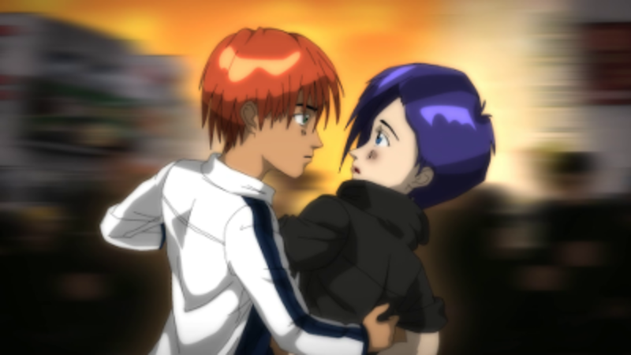
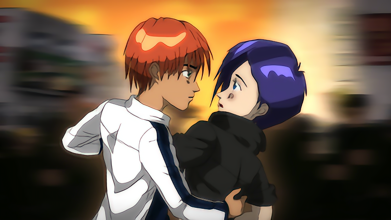

<title>Anime4Nerd: Anime Upscaler for Web Video (Anime4K)</title>
<meta name="claude:viewport-fit-sides" content="cover">
<meta name="description" content="Anime upscaler for your browser. Anime4Nerd is an extension that runs the original Anime4K shaders on any web video, live, on your GPU. 2x to 8x upscaling, six presets, and the video never leaves your machine.">
<link rel="icon" href="assets/icon.png">
<link rel="preconnect" href="https://fonts.googleapis.com">
<link rel="preconnect" href="https://fonts.gstatic.com" crossorigin>
<link rel="stylesheet" href="https://fonts.googleapis.com/css2?family=JetBrains+Mono:wght@400;500;600;700;800&display=swap">
<link rel="stylesheet" href="assets/site.css">
<link rel="stylesheet" href="assets/scenes.css">

<header class="top">
  <div class="wrap">
    <a class="brand" href="/">anime4nerd</a>
    <nav class="nav" aria-label="Sections">
      <a class="chip" href="#compare">before / after</a>
      <a class="chip" href="howitworks">how it works</a>
      <a class="chip" href="#install">install</a>
      <a class="chip" href="#changes">what's new</a>
      <a class="chip" href="report">report</a>
    </nav>
    <a class="btn primary" data-store href="https://chromewebstore.google.com/detail/anime4nerd/kblnmcdmlgeidaclnhjmcffefmkehkpm" rel="noopener">add to chrome</a>
  </div>
</header>

<main class="wrap" id="top">
  <section class="hero">
    <div>
      <div class="phead"><span>browser extension · chrome · brave · edge · firefox</span></div>
      <h1><span>Sharper</span><span class="o">anime.</span></h1>
      <p class="lede">Right in your browser. The original Anime4K neural upscaler, running live on your own GPU. Switch it on for any web video and every frame is restored and doubled in resolution, or more.</p>
      <div class="get">
        <div class="cta">
          <a class="btn primary" data-store href="https://chromewebstore.google.com/detail/anime4nerd/kblnmcdmlgeidaclnhjmcffefmkehkpm" rel="noopener">add to chrome · free</a>
          <a class="btn" href="#compare">see before / after</a>
        </div>
        <div class="avail"><span class="lab">available for</span>
        <a href="https://chromewebstore.google.com/detail/anime4nerd/kblnmcdmlgeidaclnhjmcffefmkehkpm" rel="noopener" title="Get Anime4Nerd for Chrome"><svg viewBox="0 0 24 24" aria-hidden="true"><path fill="currentColor" d="M12 0C8.21 0 4.831 1.757 2.632 4.501l3.953 6.848A5.454 5.454 0 0 1 12 6.545h10.691A12 12 0 0 0 12 0zM1.931 5.47A11.943 11.943 0 0 0 0 12c0 6.012 4.42 10.991 10.189 11.864l3.953-6.847a5.45 5.45 0 0 1-6.865-2.29zm13.342 2.166a5.446 5.446 0 0 1 1.45 7.09l.002.001h-.002l-5.344 9.257c.206.01.413.016.621.016 6.627 0 12-5.373 12-12 0-1.54-.29-3.011-.818-4.364zM12 16.364a4.364 4.364 0 1 1 0-8.728 4.364 4.364 0 0 1 0 8.728Z"/></svg><span>chrome</span></a>
        <a href="https://chromewebstore.google.com/detail/anime4nerd/kblnmcdmlgeidaclnhjmcffefmkehkpm" rel="noopener" title="Get Anime4Nerd for Brave"><svg viewBox="0 0 24 24" aria-hidden="true"><path fill="currentColor" d="M15.68 0l2.096 2.38s1.84-.512 2.709.358c.868.87 1.584 1.638 1.584 1.638l-.562 1.381.715 2.047s-2.104 7.98-2.35 8.955c-.486 1.919-.818 2.66-2.198 3.633-1.38.972-3.884 2.66-4.293 2.916-.409.256-.92.692-1.38.692-.46 0-.97-.436-1.38-.692a185.796 185.796 0 01-4.293-2.916c-1.38-.973-1.712-1.714-2.197-3.633-.247-.975-2.351-8.955-2.351-8.955l.715-2.047-.562-1.381s.716-.768 1.585-1.638c.868-.87 2.708-.358 2.708-.358L8.321 0h7.36zm-3.679 14.936c-.14 0-1.038.317-1.758.69-.72.373-1.242.637-1.409.742-.167.104-.065.301.087.409.152.107 2.194 1.69 2.393 1.866.198.175.489.464.687.464.198 0 .49-.29.688-.464.198-.175 2.24-1.759 2.392-1.866.152-.108.254-.305.087-.41-.167-.104-.689-.368-1.41-.741-.72-.373-1.617-.69-1.757-.69zm0-11.278s-.409.001-1.022.206-1.278.46-1.584.46c-.307 0-2.581-.434-2.581-.434S4.119 7.152 4.119 7.849c0 .697.339.881.68 1.243l2.02 2.149c.192.203.59.511.356 1.066-.235.555-.58 1.26-.196 1.977.384.716 1.042 1.194 1.464 1.115.421-.08 1.412-.598 1.776-.834.364-.237 1.518-1.19 1.518-1.554 0-.365-1.193-1.02-1.413-1.168-.22-.15-1.226-.725-1.247-.95-.02-.227-.012-.293.284-.851.297-.559.831-1.304.742-1.8-.089-.495-.95-.753-1.565-.986-.615-.232-1.799-.671-1.947-.74-.148-.068-.11-.133.339-.175.448-.043 1.719-.212 2.292-.052.573.16 1.552.403 1.632.532.079.13.149.134.067.579-.081.445-.5 2.581-.541 2.96-.04.38-.12.63.288.724.409.094 1.097.256 1.333.256s.924-.162 1.333-.256c.408-.093.329-.344.288-.723-.04-.38-.46-2.516-.541-2.961-.082-.445-.012-.45.067-.579.08-.129 1.059-.372 1.632-.532.573-.16 1.845.009 2.292.052.449.042.487.107.339.175-.148.069-1.332.508-1.947.74-.615.233-1.476.49-1.565.986-.09.496.445 1.241.742 1.8.297.558.304.624.284.85-.02.226-1.026.802-1.247.95-.22.15-1.413.804-1.413 1.169 0 .364 1.154 1.317 1.518 1.554.364.236 1.355.755 1.776.834.422.079 1.08-.4 1.464-1.115.384-.716.039-1.422-.195-1.977-.235-.555.163-.863.355-1.066l2.02-2.149c.341-.362.68-.546.68-1.243 0-.697-2.695-3.96-2.695-3.96s-2.274.436-2.58.436c-.307 0-.972-.256-1.585-.461-.613-.205-1.022-.206-1.022-.206z"/></svg><span>brave</span></a>
        <a href="https://chromewebstore.google.com/detail/anime4nerd/kblnmcdmlgeidaclnhjmcffefmkehkpm" rel="noopener" title="Get Anime4Nerd for Edge"><svg viewBox="0 0 24 24" aria-hidden="true" fill="none" stroke="currentColor" stroke-width="2.1" stroke-linecap="round" stroke-linejoin="round"><path d="M20.978 11.372a9 9 0 1 0 -1.593 5.773"/><path d="M20.978 11.372c.21 2.993 -5.034 2.413 -6.913 1.486c1.392 -1.6 .402 -4.038 -2.274 -3.851c-1.745 .122 -2.927 1.157 -2.784 3.202c.28 3.99 4.444 6.205 10.36 4.79"/><path d="M3.022 12.628c-.283 -4.043 8.717 -7.228 11.248 -2.688"/><path d="M12.628 20.978c-2.993 .21 -5.162 -4.725 -3.567 -9.748"/></svg><span>edge</span></a>
        <a href="https://addons.mozilla.org/firefox/addon/anime4nerd/" rel="noopener" title="Get Anime4Nerd for Firefox"><svg viewBox="0 0 24 24" aria-hidden="true"><path fill="currentColor" d="M8.824 7.287c.008 0 .004 0 0 0zm-2.8-1.4c.006 0 .003 0 0 0zm16.754 2.161c-.505-1.215-1.53-2.528-2.333-2.943.654 1.283 1.033 2.57 1.177 3.53l.002.02c-1.314-3.278-3.544-4.6-5.366-7.477-.091-.147-.184-.292-.273-.446a3.545 3.545 0 01-.13-.24 2.118 2.118 0 01-.172-.46.03.03 0 00-.027-.03.038.038 0 00-.021 0l-.006.001a.037.037 0 00-.01.005L15.624 0c-2.585 1.515-3.657 4.168-3.932 5.856a6.197 6.197 0 00-2.305.587.297.297 0 00-.147.37c.057.162.24.24.396.17a5.622 5.622 0 012.008-.523l.067-.005a5.847 5.847 0 011.957.222l.095.03a5.816 5.816 0 01.616.228c.08.036.16.073.238.112l.107.055a5.835 5.835 0 01.368.211 5.953 5.953 0 012.034 2.104c-.62-.437-1.733-.868-2.803-.681 4.183 2.09 3.06 9.292-2.737 9.02a5.164 5.164 0 01-1.513-.292 4.42 4.42 0 01-.538-.232c-1.42-.735-2.593-2.121-2.74-3.806 0 0 .537-2 3.845-2 .357 0 1.38-.998 1.398-1.287-.005-.095-2.029-.9-2.817-1.677-.422-.416-.622-.616-.8-.767a3.47 3.47 0 00-.301-.227 5.388 5.388 0 01-.032-2.842c-1.195.544-2.124 1.403-2.8 2.163h-.006c-.46-.584-.428-2.51-.402-2.913-.006-.025-.343.176-.389.206-.406.29-.787.616-1.136.974-.397.403-.76.839-1.085 1.303a9.816 9.816 0 00-1.562 3.52c-.003.013-.11.487-.19 1.073-.013.09-.026.181-.037.272a7.8 7.8 0 00-.069.667l-.002.034-.023.387-.001.06C.386 18.795 5.593 24 12.016 24c5.752 0 10.527-4.176 11.463-9.661.02-.149.035-.298.052-.448.232-1.994-.025-4.09-.753-5.844z"/></svg><span>firefox</span></a>
        </div>
        <div class="tick"><span class="chip">anime4k</span><span class="chip">webgl2</span><span class="chip">2×–8× output</span><span class="chip">no account</span><span class="chip">mit</span></div>
      </div>
    </div>

    <div class="sheet" id="sheet">
      <div class="phead"><span>the popup · live</span><span class="try"><b>click anything</b> · it works</span></div>
      <div class="tbar" aria-hidden="true"><span class="dots"><i></i><i></i><i></i></span><span class="url">your-favourite-stream.example/watch?ep=3</span><span class="x">⋯</span><span class="x me" id="me"></span></div>
      <svg class="hcur" id="hcur" viewBox="0 0 22 22" aria-hidden="true"><path d="M3 2 L3 18 L7.5 13.8 L10.5 20 L13.2 18.8 L10.3 12.8 L16.5 12.6 Z" fill="#eceded" stroke="#08090a" stroke-width="1.4" stroke-linejoin="round"/></svg>
      <div class="row" id="row">
        <div class="popbox" id="pp" data-h="585"><iframe src="popup/" title="The Anime4Nerd popup, working on a demo video"></iframe></div>

        <div class="notes" id="notes" aria-hidden="true" hidden>
          <span class="co" data-sel="#modeChip">Mode<small>auto · anime · manga</small></span>
          <span class="co" data-sel="#sources">What's playing<small>its switch turns it on or off</small></span>
          <span class="co" data-sel="#c-tabs">Folder tabs<small>upscale · color</small></span>
          <span class="co" data-sel="#perf">Live GPU time<small>Chrome, Edge, Brave</small></span>
          <span class="co" data-sel="#presets">Six presets<small>the Anime4K chains</small></span>
          <span class="co" data-sel="#upscale">Upscale factor<small>auto · 2× · 4× · 8×</small></span>
          <span class="co" data-sel="#cs-list">Ten color controls<small>in VLC's units</small></span>
        </div>
      </div>
    </div>
  </section>

  <div class="readout">
    <div><span>output</span><b>2–8× res</b></div>
    <div><span>1080p frame · rtx 2060</span><b>~15 ms</b></div>
    <div><span>presets</span><b>6</b></div>
    <div><span>sent over the network</span><b class="ok">0 bytes</b></div>
  </div>

  <section id="compare" class="sec">
      <div class="rail">
        <div class="phead"><span>ep 01 · before / after</span></div>
        <h2>Drag to compare.</h2>
        <p class="intro">A 225p anime frame scaled to 2×. Left: the browser's normal scaling. Right: Anime4K A+A with darken lines, produced by the extension's own pipeline.</p>
        <figure class="scene" aria-hidden="true"><div class="phead"><span><b>switch it on</b></span><span>the frame</span></div>
        <div class="stage"><div class="in s3">
        <div class="vid"><span class="scan"></span><span class="rs">1080p → 2160p</span></div>
        <div class="card3"><b>Starlight Academy</b><span data-aim="1" class="sw3"><i></i></span><span class="ep3"><i>S1 E3</i>The Night Before the Festival</span><em class="off">stream.example · 1080p</em><em class="onn">stream.example · 1080p → 3840×2160 (2×)</em></div>
        <svg class="cur" viewBox="0 0 22 22" aria-hidden="true"><path d="M3 2 L3 18 L7.5 13.8 L10.5 20 L13.2 18.8 L10.3 12.8 L16.5 12.6 Z" fill="#eceded" stroke="#08090a" stroke-width="1.4" stroke-linejoin="round"/></svg>
        </div></div>
        </figure>
      </div>
      <div class="body">
        <div class="compare" id="cmp" style="--pos:50%;--p:0.5">
        <div class="layer">
        
        <span class="tag l">browser scaling</span>
        </div>
        <div class="reveal">
        <div class="layer">
        
        <span class="tag r">anime4nerd · a+a</span>
        </div>
        </div>
        <span class="divider"><span class="handle" aria-hidden="true">⇆</span></span>
        <input type="range" id="cmp-range" min="0" max="100" step="any" value="50" aria-label="Comparison position: left of the line shows browser scaling, right of the line shows Anime4Nerd">
        </div>
        <div class="cmp-meter" id="cmp-meter" style="--pos:50%;--p:0.5" aria-hidden="true">
        <span class="b" id="cmp-b">50% browser</span>
        <span class="cmp-track"><i></i><b></b></span>
        <span class="a" id="cmp-a">50% anime4nerd</span>
        </div>
        <div class="cmp-controls">
        <div class="seg" role="group" aria-label="Show" id="cmp-seg">
        <button type="button" data-to="100" aria-pressed="false">browser</button>
        <button type="button" data-to="50" aria-pressed="true">split</button>
        <button type="button" data-to="0" aria-pressed="false">anime4nerd</button>
        </div>
        <span class="cmp-hint">or drag the line</span>
        </div>
        <p class="credit">“A snapshot from the 2012 demo release from the Morevna Project” by <a href="https://morevnaproject.org/" rel="noopener">Morevna Project</a>, <a href="https://creativecommons.org/licenses/by/3.0/" rel="noopener">CC BY 3.0</a>. Cropped and upscaled; no endorsement implied.</p>
      </div>
  </section>

  <section id="how" class="sec wide">
      <div class="rail">
        <div class="phead"><span>ep 02 · how it works</span></div>
        <h2>Five passes, every frame.</h2>
        <p class="intro">bloc97's Anime4K shaders, copied unchanged from the open-source project. Anime4Nerd reads their mpv shader format and runs each pass in WebGL2, once per decoded video frame.</p>
        <p><a class="btn deep" href="howitworks"><b>How it works, in depth</b><i aria-hidden="true">→</i><small>shaders · colour · manga · limits</small></a></p>
      </div>
      <div class="body">
        <ol class="pipe" id="pipe">
        <li><span class="n">pass 01</span><h3>Read the frame</h3><p>The current frame is copied from the page's video into GPU memory.</p><span class="k">upload · 0.3 ms</span></li>
        <li><span class="n">pass 02</span><h3>Clamp highlights</h3><p>Limits bright overshoot so later passes don't ring around edges.</p><span class="k">clamp · 0.6 ms</span></li>
        <li><span class="n">pass 03</span><h3>Restore</h3><p>A small neural network repairs blur and compression on lines.</p><span class="k">cnn · 6.1 ms</span></li>
        <li><span class="n">pass 04</span><h3>Upscale ×2</h3><p>A second network doubles width and height, predicting the new pixels.</p><span class="k">cnn ×2 · 7.4 ms</span></li>
        <li><span class="n">pass 05</span><h3>Overlay</h3><p>The result is drawn on a canvas laid exactly over the player.</p><span class="k">draw · 0.7 ms</span></li>
        </ol>
      </div>
  </section>

  <section id="presets" class="sec">
      <div class="rail">
        <div class="phead"><span>ep 03 · presets &amp; cost</span></div>
        <h2>Pick the look.</h2>
        <p class="intro">The six original Anime4K preset chains, measured per frame on an RTX 2060 upscaling 1080p to 2160p. A 24 fps video allows 41.7 ms per frame.</p>
        <figure class="scene" aria-hidden="true"><div class="phead"><span><b>pick a preset</b></span><span>frame cost</span></div>
        <div class="stage"><div class="in s5">
        <div class="pre">
        <div class="pan"><div class="phead"><span>preset</span><span>budget 41.7 ms</span></div>
        <div class="grid"><span class="t"><b>Mode A</b><small>sharp</small></span><span class="t"><b>Mode B</b><small>soft</small></span><span class="t"><b>Mode C</b><small>denoise</small></span><span data-aim="1" class="t"><b>A+A</b><small>sharper, heavy</small></span><span class="t"><b>B+B</b><small>softer, heavy</small></span><span class="t"><b>C+A</b><small>denoise+sharp</small></span><span class="sel"></span></div>
        </div>
        <div class="pan"><div class="ms"><span>per frame</span><b><span class="a">15.1 ms</span><span class="aa">23.7 ms</span></b><span class="ok">● keeping up</span></div><div class="track"><i></i><s></s></div></div>
        </div>
        <svg class="cur" viewBox="0 0 22 22" aria-hidden="true"><path d="M3 2 L3 18 L7.5 13.8 L10.5 20 L13.2 18.8 L10.3 12.8 L16.5 12.6 Z" fill="#eceded" stroke="#08090a" stroke-width="1.4" stroke-linejoin="round"/></svg>
        </div></div>
        </figure>
      </div>
      <div class="body">
        <div class="table-wrap">
        <table>
        <thead><tr><th>Preset</th><th>What it does</th><th>Best for</th><th>GPU per frame</th></tr></thead>
        <tbody>
        <tr><td>Mode A</td><td>Restore, then 2× upscale</td><td>most 1080p</td><td class="num"><div class="bar-cell">15.1 ms<span class="meter"><i style="width:36%"></i></span></div></td></tr>
        <tr><td>Mode B</td><td>Soft restore, then 2× upscale</td><td>clean sources</td><td class="num"><div class="bar-cell">≈15 ms<span class="meter"><i style="width:36%"></i></span></div></td></tr>
        <tr><td>Mode C</td><td>Denoise and 2× upscale</td><td>noisy video</td><td class="num"><div class="bar-cell">13.2 ms<span class="meter"><i style="width:32%"></i></span></div></td></tr>
        <tr><td>A + A</td><td>Mode A plus a second restore</td><td>soft 720p</td><td class="num"><div class="bar-cell">23.7 ms<span class="meter"><i style="width:57%"></i></span></div></td></tr>
        <tr><td>B + B</td><td>Mode B plus a second soft restore</td><td>gentle sharpening</td><td class="num"><div class="bar-cell">≈24 ms<span class="meter"><i style="width:57%"></i></span></div></td></tr>
        <tr><td>C + A</td><td>Denoise, then sharp restore</td><td>old or compressed</td><td class="num"><div class="bar-cell">15.8 ms<span class="meter"><i style="width:38%"></i></span></div></td></tr>
        </tbody>
        </table>
        </div>
        <p class="note">Bars show share of the 41.7 ms frame budget. B and B+B are estimated from A and A+A, which use networks of the same size. Measured in Chrome on an RTX 2060; Firefox runs at about the same speed but cannot show GPU time, so its panel shows frame rate instead.</p>
      </div>
  </section>

  <section id="fullscreen" class="sec">
      <div class="rail">
        <div class="phead"><span>ep 04 · fullscreen &amp; upscale</span></div>
        <h2>Bigger, in fullscreen.</h2>
        <p class="intro">The toolbar popup can't open over a fullscreen video, so a small menu opens inside the player instead. It also sets how far to upscale.</p>
        <figure class="scene" aria-hidden="true"><div class="phead"><span><b>open the ☰ menu, pick 4×</b></span><span>fullscreen</span></div>
        <div class="stage"><div class="in s8">
        <div class="fsv"></div>
        <span data-aim="1" class="hb"><i class="h1">☰</i><i class="h2">✕</i></span>
        <div class="fm">
        <div class="hd"><span>anime4nerd</span><i>on</i></div>
        <div class="sw2"><span class="b8">720p → 2560×1440 (2×)</span><span class="a8">720p → 5120×2880 (4×)</span></div>
        <div class="sw2 ok"><span class="b8">gpu 8.2 ms / 42 ms · keeping up</span><span class="a8">gpu 16.4 ms / 42 ms · keeping up</span></div>
        <div class="bars8"><i style="height:40%"></i><i style="height:46%"></i><i style="height:38%"></i><i style="height:44%"></i><i style="height:50%"></i><i style="height:41%"></i><i style="height:39%"></i><i style="height:47%"></i><i style="height:42%"></i><i style="height:45%"></i><i style="height:40%"></i><i style="height:48%"></i><i style="height:43%"></i><i style="height:39%"></i><i style="height:46%"></i><i style="height:41%"></i><i style="height:44%"></i><i style="height:40%"></i><i style="height:47%"></i><i style="height:42%"></i><s></s></div>
        <div class="ft8"><i class="on">upscale</i><i>color</i></div>
        <span class="lb">upscale</span>
        <div class="ups8"><i>auto</i><i class="u2">2×</i><i data-aim="2" class="u4">4×</i><i>8×</i></div>
        </div>
        <svg class="cur" viewBox="0 0 22 22" aria-hidden="true"><path d="M3 2 L3 18 L7.5 13.8 L10.5 20 L13.2 18.8 L10.3 12.8 L16.5 12.6 Z" fill="#eceded" stroke="#08090a" stroke-width="1.4" stroke-linejoin="round"/></svg>
        </div></div>
        </figure>
      </div>
      <div class="body">
        <div class="panel">
        <div class="phead"><span>the ☰ menu</span></div>
        <h3>Change it without leaving fullscreen</h3>
        <p>Move the mouse and a ☰ button appears in the top-right corner of the player. It opens the on/off switch, presets, line effects, the upscale factor and a live GPU graph, and fades away when the mouse rests. Clicks on the menu never reach the player, so the video keeps playing.</p>
        </div>
        <div class="table-wrap">
        <table>
        <thead><tr><th>Upscale</th><th>What happens</th><th>GPU cost</th></tr></thead>
        <tbody>
        <tr><td>auto</td><td>2×, or 4× when a small video fills a big screen (720p fullscreen on 1440p or 4K)</td><td>as 2× or 4×</td></tr>
        <tr><td>2×</td><td>One upscale pass, as in every earlier version</td><td>baseline</td></tr>
        <tr><td>4×</td><td>A second, lighter upscale pass on top</td><td>about 2×</td></tr>
        <tr><td>8×</td><td>A third pass, capped to what your GPU can hold: 8K output and 2 GB of textures, and stepped down while the GPU can't keep up. The popup says when it capped.</td><td>high</td></tr>
        </tbody>
        </table>
        </div>
        <p class="note">Measured on 720p Mode A: 8.2 ms per frame at 2×, 16.4 ms at 4×. Above 4× the browser shrinks most of the extra detail back to your screen size.</p>
      </div>
  </section>

  <section id="color" class="sec split">
      <div class="rail">
        <div class="phead"><span>ep 05 · color controls</span><span>new in 1.3.0</span></div>
        <h2>Grade the picture.</h2>
        <p class="intro">Ten controls in VLC's units, so a value you know from VLC means the same here. They sit in the popup's color tab and in the fullscreen ☰ menu, and can also apply to videos that are not upscaled.</p>
        <ul class="ctl" aria-label="The ten controls">
          <li>brightness</li><li>contrast</li><li>saturation</li><li>gamma</li><li>hue</li><li>vibrance</li><li>temperature</li><li>tint</li><li>deband</li><li>grain</li>
        </ul>
        <div class="pair">
          <figure class="cpic" id="color-pic">
            <div class="phead"><span>preview</span><span>approximate</span></div>
            <div class="cpic-img"><span class="warm" aria-hidden="true"></span></div>
          </figure>
          <div class="panel">
            <div class="phead"><span>profiles</span></div>
            <h3>Five looks, plus your own</h3>
            <p>Five ready-made looks, or your own values saved under a name. The popup here is the real one: try it.</p>
            <div class="foot"><span class="chip">slice of life</span><span class="chip">sunlit</span><span class="chip">shonen</span><span class="chip">moody</span><span class="chip">vintage</span></div>
          </div>
        </div>
      </div>
      <div class="body">
        <div class="popbox" id="color-pop" data-h="545"><iframe src="popup/?color=1#tab=color" title="The popup's color tab, working" loading="lazy"></iframe><svg class="pcur" viewBox="0 0 22 22" aria-hidden="true"><path d="M3 2 L3 18 L7.5 13.8 L10.5 20 L13.2 18.8 L10.3 12.8 L16.5 12.6 Z" fill="#eceded" stroke="#08090a" stroke-width="1.4" stroke-linejoin="round"/></svg></div>
      </div>
  </section>

  <section id="manga" class="sec split">
      <div class="rail">
        <div class="phead"><span>ep 06 · manga mode</span><span>new in 1.3.0</span></div>
        <h2>Sharper pages, too.</h2>
        <p class="intro">Manga readers get the same treatment. Each page of a chapter is upscaled once, on your GPU, and swapped in place. Press <kbd>Alt</kbd>+<kbd>M</kbd> to see the originals again.</p>
        <div class="pair">
          <div class="panel">
            <div class="phead"><span>mode</span></div>
            <h3>auto, anime or manga</h3>
            <p>Video and manga, video only, or pages only. When a page holds the other kind, the popup suggests a switch.</p>
          </div>
          <div class="panel">
            <div class="phead"><span>page map</span></div>
            <h3>Every page at a glance</h3>
            <p>Which pages are done, which are in progress and which wait, with the time per page.</p>
            <div class="foot"><span class="chip">chrome</span><span class="chip">edge</span><span class="chip">brave</span><span class="chip">firefox</span></div>
          </div>
          <div class="panel">
            <div class="phead"><span>order</span></div>
            <h3>Nearest page first</h3>
            <p>Pages near where you read go first. A page is redone only when you change the preset.</p>
          </div>
          <div class="panel">
            <div class="phead"><span>black &amp; white</span></div>
            <h3>Grey stays grey</h3>
            <p>Pages without colour are kept grey, with no tint from the shaders.</p>
          </div>
        </div>
      </div>
      <div class="body">
        <div class="popbox" id="manga-pop" data-h="500"><iframe src="popup/?pages=36" title="The popup on a manga chapter, working" loading="lazy"></iframe></div>
      </div>
  </section>

  <section id="install" class="sec long">
      <div class="rail">
        <div class="phead"><span>ep 07 · install</span></div>
        <h2>Get Anime4Nerd.</h2>
        <p class="intro">Add it, pin it from the puzzle menu once, and it is one click away on any video.</p>
        <figure class="scene" aria-hidden="true"><div class="phead"><span><b>pin it, open it, switch on</b></span><span>toolbar</span></div>
        <div class="stage"><div class="in s7">
        <div class="tb"><span class="dots"><i></i><i></i><i></i></span><span class="url">your-favourite-stream.example</span><span data-aim="3" class="x me newme"></span><span data-aim="1" class="x pz"><svg viewBox="0 0 20 20" aria-hidden="true"><path d="M3 7h3.2a2 2 0 1 1 3.6 0H13v3.2a2 2 0 1 1 0 3.6V17H9.8a2 2 0 1 0-3.6 0H3v-3.2a2 2 0 1 0 0-3.6z" fill="none" stroke="currentColor" stroke-width="1.3"/></svg></span></div>
        <div class="menu"><div class="phead"><span>extensions</span><span>2</span></div>
        <div class="it"><span>Anime4Nerd</span><span data-aim="2" class="pin"><svg viewBox="0 0 20 20" aria-hidden="true"><path d="M7 3h6l-1 5 3 3H5l3-3zM10 11v6" fill="none" stroke="currentColor" stroke-width="1.4" stroke-linejoin="round"/></svg></span></div>
        <div class="it dim"><span class="ph"></span><span>another extension</span></div>
        </div>
        <div class="mp real"><iframe src="popup/?off=1" title="" tabindex="-1" loading="lazy"></iframe><span data-aim="4" data-at="#sources .switch" class="nw"></span></div>
        <svg class="cur" viewBox="0 0 22 22" aria-hidden="true"><path d="M3 2 L3 18 L7.5 13.8 L10.5 20 L13.2 18.8 L10.3 12.8 L16.5 12.6 Z" fill="#eceded" stroke="#08090a" stroke-width="1.4" stroke-linejoin="round"/></svg>
        </div></div>
        </figure>
      </div>
      <div class="body">
        <div class="panel">
        <div class="phead"><span>option a · recommended</span></div>
        <h3>From the Chrome Web Store</h3>
        <p>One click in Chrome, Brave or Edge. Updates install automatically.</p>
        <div class="foot"><a class="btn primary" href="https://chromewebstore.google.com/detail/anime4nerd/kblnmcdmlgeidaclnhjmcffefmkehkpm" rel="noopener">add to chrome</a><span class="chip">chrome · brave · edge 116+</span><span class="chip">webgl2 gpu</span><span class="chip">free</span></div>
        </div>
        <div class="panel">
        <div class="phead"><span>option b · manual</span></div>
        <h3>From the package</h3>
        <ol class="steps">
        <li><span>Download <a href="https://github.com/creedweb3/anime4nerd/releases/latest/download/anime4nerd.zip" rel="noopener"><code>anime4nerd.zip</code></a> (<a href="https://github.com/creedweb3/anime4nerd/releases/latest/download/anime4nerd.zip.sha256" rel="noopener">sha256</a>) and unzip it.</span></li>
        <li><span>Open <code>chrome://extensions</code> (or <code>brave://extensions</code>) and turn on Developer mode.</span></li>
        <li><span>Choose <b>Load unpacked</b> and pick the unzipped folder.</span></li>
        <li><span>Play a video, open the extension, and switch the video on.</span></li>
        </ol>
        <div class="foot"><span class="chip">release 1.3.0</span><span class="chip">mit</span><a class="chip" href="https://github.com/creedweb3/anime4nerd" rel="noopener">source on github →</a></div>
        </div>
        <div class="panel">
        <div class="phead"><span>option c · firefox</span></div>
        <h3>From Firefox Add-ons</h3>
        <p>One click in desktop Firefox 140 or newer. Updates install automatically.</p>
        <div class="foot"><a class="btn primary" href="https://addons.mozilla.org/firefox/addon/anime4nerd/" rel="noopener">add to firefox</a><span class="chip">firefox 140+</span><span class="chip">webgl2 gpu</span><a class="chip" href="https://github.com/creedweb3/anime4nerd#install-firefox" rel="noopener">readme →</a></div>
        </div>
      </div>
  </section>

  <section id="questions" class="sec">
      <div class="rail">
        <div class="phead"><span>ep 08 · questions</span></div>
        <h2>Questions.</h2>
        <p class="intro">Short answers to what people ask most.</p>
        <figure class="scene" aria-hidden="true"><div class="phead"><span><b>only some sites</b></span><span>site access</span></div>
        <div class="stage"><div class="in s6">
        <div class="ext">
        <div class="hd"><b>Anime4Nerd</b><small>details · 1.3.0</small></div>
        <div class="rw"><span>Site access</span><span data-aim="1" class="dd"><span class="v1">On all sites</span><span class="v2">On specific sites</span><span class="opts"><i>When you click it</i><i data-aim="2" class="spec">On specific sites</i><i class="all">On all sites</i></span></span></div>
        <div class="list"><span class="lbl">runs on</span><span class="all-sites">all sites</span><div class="sites"><i class="add">stream.example</i><i>+ add a site</i></div></div>
        </div>
        <svg class="cur" viewBox="0 0 22 22" aria-hidden="true"><path d="M3 2 L3 18 L7.5 13.8 L10.5 20 L13.2 18.8 L10.3 12.8 L16.5 12.6 Z" fill="#eceded" stroke="#08090a" stroke-width="1.4" stroke-linejoin="round"/></svg>
        </div></div>
        </figure>
      </div>
      <div class="body">
        <div class="panel faq">
        <details name="faq" open><summary>How does it work?</summary><p>It's not an AI tool. Anime4Nerd uses shaders on your GPU to clean up each frame of the video as it plays: the blur goes away and the lines get sharper. It doesn't generate or redraw anything; it improves the picture you're already watching, on any site, and the video never leaves your computer.</p></details>
        <details name="faq"><summary>Does it work on live action or regular shows?</summary><p>It runs on any video, but it is made for anime. The Anime4K networks are trained on hand-drawn animation: clean line art and flat colour. On live action, films and 3D-animated shows the result can look over-sharpened or painted, so the browser's normal scaling usually looks better there.</p></details>
        <details name="faq"><summary>Does it work on every site?</summary><p>It works on any site where the video is served with cross-origin access, which most players do. DRM-protected video (Widevine) cannot be read by any extension, so it plays normally.</p></details>
        <details name="faq"><summary>What do I need?</summary><p>Chrome, Brave or Edge 116 or newer (or Firefox 140 or newer) and a GPU with WebGL2. A mid-range GPU handles Mode A at 24 fps comfortably.</p></details>
        <details name="faq"><summary>Can it upscale more than 2×?</summary><p>Yes. The Anime4K networks are trained for exactly 2×, so 4× and up chain extra 2× passes. Auto picks 4× when a small video fills a big screen, like 720p fullscreen on a 1440p or 4K display. You can also choose up to 8×; Anime4Nerd uses the largest factor your GPU can hold (8K output at most), steps down while your GPU can't keep up, and says when it capped. Above 4× the browser shrinks most of the extra detail back to your screen size.</p></details>
        <details name="faq"><summary>Can I limit it to some sites?</summary><p>Yes. In <code>chrome://extensions</code>, open Anime4Nerd's details and set Site access to "On specific sites". In Firefox, use <code>about:addons</code> → Anime4Nerd → Permissions.</p></details>
        <div class="foot"><span>Something else?</span><a class="chip" href="https://github.com/creedweb3/anime4nerd/issues" rel="noopener">ask on github →</a></div>
        </div>
      </div>
  </section>

  <section id="changes" class="sec doc long">
      <div class="rail">
        <div class="phead"><span>ep 09 · version history</span></div>
        <h2>What's new.</h2>
        <p class="intro">After an update the toolbar icon shows a NEW badge, and the popup links here.</p>
        <figure class="scene" aria-hidden="true"><div class="phead"><span><b>after an update</b></span><span>new badge</span></div>
        <div class="stage"><div class="in s2">
        <div class="tb"><span class="dots"><i></i><i></i><i></i></span><span class="url">your-favourite-stream.example/watch?ep=2</span><span class="x">⋯</span><span data-aim="1" class="x me"><span class="badge">NEW</span></span></div>
        <div class="mp real"><iframe src="popup/?new=1" title="" tabindex="-1" loading="lazy"></iframe><span data-aim="2" data-at="#whatsnew" class="nw"></span></div>
        <svg class="cur" viewBox="0 0 22 22" aria-hidden="true"><path d="M3 2 L3 18 L7.5 13.8 L10.5 20 L13.2 18.8 L10.3 12.8 L16.5 12.6 Z" fill="#eceded" stroke="#08090a" stroke-width="1.4" stroke-linejoin="round"/></svg>
        </div></div>
        </figure>
      </div>
      <div class="body">
        <div class="timeline">
          <article class="rel latest">
            <div class="rel-head"><h3>1.3.0</h3><span class="new">latest</span><time class="date" datetime="2026-11-21">21 Nov 2026</time></div>
            <ul>
            <li><strong>Manga mode.</strong> Upscales the pages of manga readers, once per chapter, on Chrome, Edge, Brave and Firefox. Alt+M shows the originals. A mode setting (auto, anime, manga) decides what it works on, and the popup suggests a switch when a page holds the other kind.</li>
            <li><strong>Color controls.</strong> Ten controls in VLC's units (brightness, contrast, saturation, gamma, hue, vibrance, temperature, tint, deband, grain), five ready-made looks and your own saved profiles, in the popup and the fullscreen menu. They can also apply to videos that are not upscaled.</li>
            <li><strong>A new popup.</strong> Redesigned from top to bottom: custom dropdowns and tooltips, one clear status per state, and long titles and lists that always fit.</li>
            <li><strong>Lighter on your GPU.</strong> Only the parts of a frame that changed are redrawn (3–5× less GPU time on still scenes), and when your GPU can't keep up the upscale steps down instead of dropping frames. 16× and 32× are gone; 8× is the most.</li>
            <li><strong>Replies to your reports.</strong> A report now gets a ticket: we can answer, you can write back, no account needed. The bug icon in the popup opens your tickets.</li>
            <li><strong>Fixes.</strong> Videos in Vime players (like mkissa.to) no longer go black, and the switch turns them off again. The picture no longer stays hidden after a seek. Videos a site won't let us read get a tip to try another server.</li>
            </ul>
          </article>
          <article class="rel">
            <div class="rel-head"><h3>1.2.5</h3><time class="date" datetime="2026-11-12">12 Nov 2026</time></div>
            <ul>
            <li><strong>Firefox: desktop only.</strong> The Firefox build is now offered for desktop Firefox 140 or newer only, not Firefox for Android, where it was never tested.</li>
            <li><strong>Same version everywhere:</strong> Chrome, Edge, Brave and Firefox all get 1.2.5. Nothing else changed.</li>
            </ul>
          </article>
          <article class="rel">
            <div class="rel-head"><h3>1.2.4</h3><time class="date" datetime="2026-11-12">12 Nov 2026</time></div>
            <ul>
            <li><strong>Report a problem from the popup.</strong> A bug icon at the end of the top bar opens a short form with your version and browser filled in. It sends only what you write and the screenshots you pick, and only when you press send.</li>
            <li><strong>A short goodbye form.</strong> If you remove the extension, the browser opens an optional page asking what didn't work. Nothing is sent unless you fill it in.</li>
            <li><strong>Same version everywhere:</strong> Chrome, Edge, Brave and Firefox all get 1.2.4.</li>
            </ul>
          </article>
          <article class="rel">
            <div class="rel-head"><h3>1.2.3</h3><time class="date" datetime="2026-11-12">12 Nov 2026</time></div>
            <ul>
            <li><strong>Player controls stay on top.</strong> The seek bar, settings menus and subtitles of a player are no longer hidden under the upscaled picture, on any player.</li>
            <li><strong>Built-in subtitles come back.</strong> Sites that use the browser's own subtitle tracks get them redrawn above the upscaled picture, in the site's style, and lifted above the control bar while it shows.</li>
            <li><strong>A tidier fullscreen menu</strong> with a green/red status box and an even preset grid.</li>
            <li><strong>Rating card on Firefox</strong>, linking to the Firefox Add-ons reviews.</li>
            </ul>
          </article>
          <article class="rel">
            <div class="rel-head"><h3>1.2.2</h3><time class="date" datetime="2026-11-08">8 Nov 2026</time></div>
            <ul>
            <li><strong>A clearer name in the store:</strong> Anime4Nerd: Anime Upscaler &amp; Video Enhancer (Anime4K). Nothing else changed.</li>
            </ul>
          </article>
          <article class="rel">
            <div class="rel-head"><h3>1.2.1</h3><time class="date" datetime="2026-11-08">8 Nov 2026</time></div>
            <ul>
            <li><strong>A rating card</strong> (Chrome, Edge, Brave). After a few episodes the popup shows how much you've upscaled and asks, once per milestone, if you'd rate it. Close it and it waits for the next one; say you already rated and it never comes back. The counts stay on your device.</li>
            </ul>
          </article>
          <article class="rel">
            <div class="rel-head"><h3>1.2.0</h3><time class="date" datetime="2026-11-08">8 Nov 2026</time></div>
            <ul>
            <li><strong>Firefox support.</strong> The same extension now builds for Firefox 140 and newer, with every preset, the fullscreen menu and the per-site switch. On an RTX 2060 it runs as fast as in Chrome.</li>
            <li><strong>Video files opened directly</strong> (a <code>.webm</code> or <code>.mp4</code> as the whole page) no longer go black in Firefox.</li>
            <li><strong>Clear stats without GPU timing.</strong> Firefox can't measure GPU time, so its panel shows the video's frame rate, how many of its frames are drawn, and whether it keeps up.</li>
            </ul>
          </article>
          <article class="rel">
            <div class="rel-head"><h3>1.1.1</h3><time class="date" datetime="2026-10-26">26 Oct 2026</time></div>
            <ul>
            <li><strong>The fullscreen menu shows up on more players:</strong> sites that fullscreen the video itself, embedded players whose page fullscreens the whole frame, F11, and players built with shadow DOM. Upscaling keeps running in all of them.</li>
            <li><strong>No more leftover errors after an update.</strong> The old copy of the extension on open pages now steps aside silently.</li>
            </ul>
          </article>
          <article class="rel">
            <div class="rel-head"><h3>1.1.0</h3><time class="date" datetime="2026-10-26">26 Oct 2026</time></div>
            <ul>
            <li><strong>Upscale beyond 2×.</strong> Pick auto, 2×, 4×, 8×, 16× or 32×. Auto uses 4× when a small video fills a big screen, like 720p in fullscreen on a 1440p or 4K display. Higher choices run at the largest factor your GPU can hold, and the popup says when it capped.</li>
            <li><strong>A menu inside fullscreen.</strong> Move the mouse and a ☰ button appears in the corner of the player: switch it on or off, change preset, line effects and upscale factor, and watch the GPU graph without leaving fullscreen.</li>
            <li><strong>Exact output size</strong> on each video card, like <code>720p → 5120×2880 (4×)</code>.</li>
            <li><strong>Clean restarts after an update.</strong> The old copy of the extension no longer keeps drawing on open pages or throws "Extension context invalidated" errors.</li>
            <li><strong>Security pass</strong> on the new parts, including tests that play the role of a hostile page.</li>
            </ul>
          </article>
          <article class="rel">
            <div class="rel-head"><h3>1.0.1</h3><time class="date" datetime="2026-10-20">20 Oct 2026</time></div>
            <ul>
            <li><strong>Works on DVD-era anime.</strong> Older shows mastered from DVD often use non-square pixels, and on those the upscaled picture stayed frozen or blank. They now upscale like everything else.</li>
            <li><strong>Rotated and odd-sized videos</strong> are handled correctly.</li>
            <li><strong>Clear errors instead of a stuck picture.</strong> If the GPU rejects a frame, Anime4Nerd now switches back to the normal video and tells you why.</li>
            <li><strong>Better overlay placement</strong> on players that crop the video, pin it to a corner, sit in a scrolling box, or move the video between layouts.</li>
            <li><strong>Picture-in-picture and fullscreen</strong> now pause the upscaler on players built with shadow DOM too.</li>
            <li><strong>Lighter on busy pages.</strong> At most two videos per page are upscaled at once; playing and larger videos go first, the rest wait.</li>
            <li><strong>Update notice.</strong> After an update, a small NEW badge and a one-line note in the popup link here, so you can see what changed.</li>
            <li>Fixed quick setting toggles overwriting each other, and popup switches that could stop updating after a drag.</li>
            </ul>
          </article>
          <article class="rel">
            <div class="rel-head"><h3>1.0.0</h3><time class="date" datetime="2026-10-18">18 Oct 2026</time></div>
            <ul>
            <li>First release: real-time 2× Anime4K upscaling for any web video, six presets, optional line darkening and thinning, per-site on/off.</li>
            </ul>
          </article>
        </div>
      </div>
  </section>

  <section id="privacy" class="sec doc">
      <div class="rail">
        <div class="phead"><span>ep 10 · privacy</span></div>
        <h2>Privacy.</h2>
      </div>
      <div class="body">
        <div class="prose">
        <p><strong>Anime4Nerd does not collect, store, or transmit any personal data.</strong> Video frames are processed on your GPU and discarded. Your settings stay in your browser's extension storage. The extension sends nothing about you; its only network requests are in manga mode, downloading the page images your manga reader already shows. The bug icon in the popup and the page shown after removal open optional forms on this site, which send only what you write, when you press send.</p>
        <p><a href="privacy">Read the full privacy policy</a></p>
        </div>
      </div>
  </section>

  <section id="credits" class="sec doc">
      <div class="rail">
        <div class="phead"><span>credits &amp; licenses</span></div>
        <h2>Credits.</h2>
      </div>
      <div class="body">
        <div class="prose">
        <ul>
        <li><strong>Anime4K shaders</strong> by <a href="https://github.com/bloc97/Anime4K" rel="noopener">bloc97</a> and contributors, MIT license, used unchanged.</li>
        <li><strong>mpv</strong> user-shader format, which Anime4Nerd reads to run the shaders.</li>
        <li><strong>Comparison artwork</strong>: “A snapshot from the 2012 demo release from the Morevna Project” by <a href="https://morevnaproject.org/" rel="noopener">Morevna Project</a>, <a href="https://creativecommons.org/licenses/by/3.0/" rel="noopener">CC BY 3.0</a>, source on <a href="https://commons.wikimedia.org/wiki/File:A_snapshot_from_the_2012_demo_release_from_the_Morevna_Project.png" rel="noopener">Wikimedia Commons</a>; cropped and upscaled.</li>
        <li><strong>Extension and website</strong>: Anime4Nerd authors, MIT license.</li>
        </ul>
        <p>Anime4Nerd is not affiliated with bloc97, mpv, the Morevna Project, or any streaming site.</p>
        </div>
      </div>
  </section>
</main>

<footer class="wrap">
  <span>anime4nerd · v1.3.0 · mit</span>
  <span><a href="#changes">changes</a> · <a href="howitworks">how it works</a> · <a href="report">report a bug</a> · <a href="privacy">privacy</a> · <a href="#credits">credits</a> · <a href="https://github.com/creedweb3/anime4nerd" rel="noopener">github</a></span>
</footer>

<script>
  // Store buttons: desktop Firefox visitors get the Firefox Add-ons link. Phones and tablets,
  // Firefox for Android included, can't install it (the add-on is desktop only), so their buttons
  // point to the install section instead. Everyone else, and anyone without script, keeps Chrome.
  (function () {
    var ua = navigator.userAgent;
    var mobile = (navigator.userAgentData && navigator.userAgentData.mobile) || /Android|iPhone|iPad|iPod|Mobi/.test(ua);
    var firefox = !mobile && /Firefox\//.test(ua);
    if (!firefox && !mobile) return;
    document.querySelectorAll('a[data-store]').forEach(function (a) {
      if (firefox) {
        a.href = 'https://addons.mozilla.org/firefox/addon/anime4nerd/';
        a.textContent = a.textContent.replace('chrome', 'firefox');
      } else {
        a.href = '#install';
        a.textContent = a.textContent.replace('add to chrome', 'install on pc');
      }
    });
    // Install section: Firefox visitors get the Firefox option first and marked recommended.
    var body = document.querySelector('#install .body');
    var opts = body ? body.querySelectorAll(':scope > .panel') : [];
    if (!firefox || opts.length !== 3) return;
    var label = function (panel, text) { panel.querySelector('.phead span').textContent = text; };
    body.insertBefore(opts[2], opts[0]);
    label(opts[2], 'option a · recommended');
    label(opts[0], 'option b · chrome, brave, edge');
    label(opts[1], 'option c · manual');
  })();
  // The real popup: each .popbox frames popup/ (the extension's own popup.html, popup.css and
  // popup.js on a fake chrome.*, see site/popup/stub.js). The frame reports the popup's size;
  // the box takes it, and shrinks the popup to fit a narrow screen.
  (function () {
    var boxes = [].slice.call(document.querySelectorAll('.popbox'));
    var fit = function (box) {
      var w = Number(box.dataset.w || 380), h = Number(box.dataset.h || 560);
      var p = box.parentElement, cs = getComputedStyle(p);
      var room = p.clientWidth - parseFloat(cs.paddingLeft) - parseFloat(cs.paddingRight) - 2; // 2: the box's border
      box.style.setProperty('--w', w + 'px');
      box.style.setProperty('--h', h + 'px');
      box.style.setProperty('--k', String(Math.min(1, room / w)));
      box.dispatchEvent(new Event('popsize'));
    };
    window.addEventListener('message', function (e) {
      if (e.origin !== location.origin || !e.data) return;
      boxes.forEach(function (box) {
        if (e.source !== box.querySelector('iframe').contentWindow) return;
        if (e.data.type === 'size') { box.dataset.w = e.data.w; box.dataset.h = e.data.h; fit(box); }
        if (e.data.type === 'color') box.dispatchEvent(new CustomEvent('popcolor', { detail: e.data }));
      });
    });
    window.addEventListener('resize', function () { boxes.forEach(fit); });
    boxes.forEach(fit);
  })();

  // Hero: labels beside the popup bracket its parts (only those on screen in the current tab);
  // a click inside a part lights its label.
  (function () {
    var $ = function (id) { return document.getElementById(id); };
    var box = $('pp'), row = $('row'), notes = $('notes'), sheet = $('sheet'), me = $('me');
    if (!box) return;
    var frame = box.querySelector('iframe'), cos = notes.querySelectorAll('.co'), unhit = 0;
    var still = window.matchMedia('(prefers-reduced-motion: reduce)').matches;
    var doc = function () { try { return frame.contentDocument; } catch (e) { return null; } };
    var place = function () {
      var d = doc();
      if (!d || !d.body) return;
      var rr = row.getBoundingClientRect(), br = box.getBoundingClientRect();
      var k = Number(getComputedStyle(box).getPropertyValue('--k')) || 1;
      cos.forEach(function (co) {
        var el = d.querySelector(co.dataset.sel), r = el && el.getBoundingClientRect();
        var shown = !!r && r.height > 0 && r.bottom > 0 && r.top < d.body.clientHeight;
        co.style.visibility = shown ? '' : 'hidden';
        if (!shown) return;
        co.style.top = (br.top - rr.top + 1 + (r.top + r.height / 2) * k) + 'px';
        co.style.right = (rr.right - br.left + 30) + 'px';
        co.style.setProperty('--bh', (r.height * k) + 'px');
      });
    };
    var hook = function () {
      var d = doc();
      if (!d) return;
      d.addEventListener('click', function (e) {
        cos.forEach(function (co) { var el = d.querySelector(co.dataset.sel); co.classList.toggle('hit', !!el && el.contains(e.target)); });
        clearTimeout(unhit);
        unhit = setTimeout(function () { cos.forEach(function (co) { co.classList.remove('hit'); }); }, 450);
        setTimeout(place, 30);
      }, true);
      d.addEventListener('scroll', place, true);
      place();
    };
    notes.hidden = false;
    frame.addEventListener('load', hook);
    if (doc() && doc().readyState === 'complete' && doc().URL !== 'about:blank') hook();
    box.addEventListener('popsize', place);
    window.addEventListener('resize', place);

    // Entrance: the pointer clicks the toolbar icon and the popup drops from it, then the labels
    // appear. The pointer's tip is aimed at the icon's centre (2.7, 1.8 is the tip of the 20px pointer).
    if (!still) {
      var at = function (el) { var x = 0, y = 0; for (; el && el !== sheet; el = el.offsetParent) { x += el.offsetLeft; y += el.offsetTop; } return [x, y]; };
      var m = at(me);
      sheet.style.setProperty('--to', 'translate(' + (m[0] + me.offsetWidth / 2 - 2.7) + 'px, ' + (m[1] + me.offsetHeight / 2 - 1.8) + 'px)');
      sheet.style.setProperty('--from', 'translate(' + (m[0] - 220) + 'px, ' + (m[1] + 170) + 'px)');
      sheet.classList.add('enter');
      box.addEventListener('animationend', place);
    }
  })();

  // Color section: while on screen, a pointer opens the real popup's profile menu and switches
  // between vintage and neutral (the sliders and the picture follow), about every 5 s. It waits while the mouse is over the
  // popup and stops for good once the visitor uses it. Reduced motion: no pointer, no steps.
  (function () {
    var box = document.getElementById('color-pop');
    if (!box || window.matchMedia('(prefers-reduced-motion: reduce)').matches) return;
    var f = box.querySelector('iframe'), cur = box.querySelector('.pcur');
    var LOOKS = ['p-vintage', 'neutral'];
    var at = 0, timer = 0, seen = false, over = false, stopped = false;
    var doc = function () { try { return f.contentDocument; } catch (e) { return null; } };
    var go = function () { return seen && !over && !stopped; };
    // The pointer glides like a hand on a mouse: a slightly curved path, slow start and stop
    // (minimum-jerk easing), and more time for longer moves. It first enters from below right.
    // The path is a Web Animation of transform, so it runs on the compositor and stays smooth
    // while the popup re-renders on the main thread. Each glide holds its last frame (fill
    // forwards) until the next one replaces it: handing the end position back to the page's own
    // style made the pointer flash at a wrong spot while the main thread was busy.
    var pos = null, anim = null;
    // Position goes in the CSS translate property, not transform: the press (scale, in .down)
    // is applied after translate, so it no longer shrinks the offset and pulls the pointer
    // toward the box's corner.
    var css = function (x, y) { return x.toFixed(2) + 'px ' + y.toFixed(2) + 'px'; };
    var glide = function (x, y, done) {
      var from = pos;
      if (anim) { var m = getComputedStyle(cur).translate.split(' '); from = { x: parseFloat(m[0]) || 0, y: parseFloat(m[1]) || 0 }; }
      if (!from) from = { x: x + 80, y: y + 110 };
      var dx = x - from.x, dy = y - from.y, dist = Math.hypot(dx, dy);
      var bend = dist > 40 ? .14 : 0;
      var cx = from.x + dx / 2 - dy * bend, cy = from.y + dy / 2 + dx * bend;
      var frames = [];
      for (var i = 0; i <= 60; i++) {
        var t = i / 60, e = t * t * t * (t * (6 * t - 15) + 10), u = 1 - e;
        frames.push({ offset: t, translate: css(u * u * from.x + 2 * u * e * cx + e * e * x, u * u * from.y + 2 * u * e * cy + e * e * y) });
      }
      pos = { x: x, y: y };
      var old = anim;
      anim = cur.animate(frames, { duration: Math.min(1600, 700 + dist * 3.2), easing: 'linear', fill: 'forwards' });
      if (old) old.cancel();
      var mine = anim;
      anim.onfinish = function () { if (done && anim === mine) done(); };
    };
    // Glide the tip (2.7, 1.8 of the 20px pointer) onto the element's text, just past its middle.
    var aim = function (el, done) {
      var label = el.querySelector('b') || el, range = el.ownerDocument.createRange();
      range.selectNodeContents(label);
      var r = range.getBoundingClientRect();
      if (!r.width) r = el.getBoundingClientRect();
      var k = Number(getComputedStyle(box).getPropertyValue('--k')) || 1;
      glide((r.left + r.width * .55) * k - 2.7, (r.top + r.height * .6) * k - 1.8, done);
    };
    var press = function (el) { cur.classList.add('down'); setTimeout(function () { cur.classList.remove('down'); el.click(); }, 150); };
    var wait = function (fn, ms) {
      clearTimeout(timer);
      timer = setTimeout(function () { if (go()) fn(); else cur.classList.remove('show'); }, ms);
    };
    var step = function () {
      var d = doc(), btn = d && d.querySelector('#pf .pf-open');
      if (!btn || !btn.getBoundingClientRect().width) { wait(step, 1000); return; }
      aim(btn, function () {
        wait(function () {
          press(btn);
          wait(function () {
            var opt = d.querySelector('.pf-list .mode-opt[data-id="' + LOOKS[at] + '"]');
            if (!opt) { wait(step, 1000); return; }
            aim(opt, function () {
              opt.dispatchEvent(new PointerEvent('pointerenter')); // the popup lights the row under the pointer
              wait(function () {
                press(opt);
                at = (at + 1) % LOOKS.length;
                // drift off the closed menu, then rest until the next look
                setTimeout(function () { if (pos) glide(pos.x + 22, pos.y + 30); }, 450);
                wait(step, 3400);
              }, 500);
            });
          }, 600);
        }, 350);
      });
      cur.classList.add('show');
    };
    var resume = function () { if (go()) wait(step, 600); };
    f.addEventListener('load', function () {
      var d = doc();
      var stop = function (e) { if (e.isTrusted) { stopped = true; clearTimeout(timer); cur.classList.remove('show'); } };
      if (d) { d.addEventListener('pointerdown', stop, true); d.addEventListener('keydown', stop, true); }
    });
    box.addEventListener('mouseenter', function () { over = true; });
    box.addEventListener('mouseleave', function () { over = false; resume(); });
    new IntersectionObserver(function (entries) {
      seen = entries[0].isIntersecting;
      if (seen) resume(); else { clearTimeout(timer); cur.classList.remove('show'); }
    }, { threshold: .3 }).observe(box);
  })();

  // Color section: the picture beside the popup follows its color values. CSS filters only
  // approximate the extension's shader (brightness, contrast, saturation with vibrance, hue, and a
  // warm or cool tint for temperature).
  (function () {
    var box = document.getElementById('color-pop'), pic = document.getElementById('color-pic');
    if (!box || !pic) return;
    var img = pic.querySelector('img'), warm = pic.querySelector('.warm');
    box.addEventListener('popcolor', function (e) {
      var on = e.detail.on, v = e.detail.v || {};
      var n = function (k, d) { return on && typeof v[k] === 'number' ? v[k] : d; };
      var sat = n('saturation', 1) * (1 + (n('vibrance', 1) - 1) * 0.5);
      img.style.filter = 'brightness(' + n('brightness', 1) + ') contrast(' + n('contrast', 1) + ') saturate(' + sat + ') hue-rotate(' + n('hue', 0) + 'deg)';
      var t = n('temperature', 0);
      warm.style.background = t >= 0 ? 'rgb(255, 150, 40)' : 'rgb(40, 130, 255)';
      warm.style.opacity = String(Math.min(1, Math.abs(t) / 100) * 0.6);
    });
  })();

  // How it works: one pass is active at a time while the strip fills from box 1 to the active box,
  // then all passes read done for a moment and it starts again. Runs only while on screen.
  (function () {
    var pipe = document.getElementById('pipe');
    if (!pipe || window.matchMedia('(prefers-reduced-motion: reduce)').matches) return;
    var lis = pipe.querySelectorAll('li'), last = lis.length - 1, at = -1, timer = 0, running = false;
    var box = function (k) { return lis[k].querySelector('.n').getBoundingClientRect(); };
    var show = function () {
      lis.forEach(function (li, k) { li.classList.toggle('on', k === at); li.classList.toggle('done', k < at || at > last); });
      var pr = pipe.getBoundingClientRect(), first = box(0), sw = box(last).left - first.right;
      pipe.style.setProperty('--s0', (first.right - pr.left) + 'px');
      pipe.style.setProperty('--sw', sw + 'px');
      var prog = at < 0 ? 0 : at >= last ? 1 : (box(at).left - first.right) / sw;
      pipe.style.setProperty('--prog', String(Math.max(0, prog)));
    };
    var step = function () {
      if (!running) return;
      at = at > last ? -1 : at + 1;
      show();
      timer = setTimeout(step, at > last ? 1800 : at < 0 ? 600 : 900);
    };
    window.addEventListener('resize', show);
    new IntersectionObserver(function (entries) {
      if (entries[0].isIntersecting) { if (!running) { running = true; step(); } }
      else { running = false; clearTimeout(timer); }
    }, { threshold: .4 }).observe(pipe);
    show();
  })();

  // Questions: one answer open at a time. Browsers that know <details name> do this already;
  // this covers the ones that don't.
  (function () {
    var all = document.querySelectorAll('details[name="faq"]');
    all.forEach(function (d) {
      d.addEventListener('toggle', function () { if (d.open) all.forEach(function (o) { if (o !== d) o.open = false; }); });
    });
  })();

  // Scenes: scale each fixed 380x240 drawing to its card, and loop only while on screen.
  (function () {
    var scenes = document.querySelectorAll('.scene');
    // Each cursor aims its tip at the centre of the parts marked data-aim (layout position, so
    // the parts' own animated transforms don't skew it). 2.5, 1.6 is the tip of the 18px pointer.
    var aim = function (inner) {
      inner.querySelectorAll('[data-aim]').forEach(function (t) {
        var x = t.offsetWidth / 2, y = t.offsetHeight / 2;
        // offsets are measured inside each parent's border, so add the borders of the parents in between
        for (var el = t; el && el !== inner; el = el.offsetParent) { x += el.offsetLeft; y += el.offsetTop; if (el.offsetParent && el.offsetParent !== inner) { x += el.offsetParent.clientLeft; y += el.offsetParent.clientTop; } }
        inner.style.setProperty('--a' + t.dataset.aim, 'translate(' + (x - 2.5) + 'px, ' + (y - 1.6) + 'px)');
      });
    };
    scenes.forEach(function (s) { aim(s.querySelector('.in')); });
    // A target inside a scene's real popup (data-at): once the frame has drawn it, put the marker over
    // it (the frame is shrunk by the box's --k) and aim again.
    document.querySelectorAll('.scene [data-at]').forEach(function (t) {
      var f = t.parentElement.querySelector('iframe'), tries = 0;
      var put = function () {
        var el = null;
        try { el = f.contentDocument && f.contentDocument.querySelector(t.dataset.at); } catch (e) { return; }
        var r = el && !el.hidden && el.getBoundingClientRect();
        if (!r || !r.width) { if (++tries < 20) setTimeout(put, 250); return; }
        var k = parseFloat(getComputedStyle(t.parentElement).getPropertyValue('--k')) || 1;
        t.style.left = r.left * k + 'px'; t.style.top = r.top * k + 'px';
        t.style.width = r.width * k + 'px'; t.style.height = r.height * k + 'px';
        aim(t.closest('.in'));
      };
      f.addEventListener('load', put);
    });
    if (document.fonts) document.fonts.ready.then(function () { scenes.forEach(function (s) { aim(s.querySelector('.in')); }); });
    // Scenes with the real popup: the popup itself reacts when the pointer gets there. From..to is the
    // part of the pointer's loop in which the reaction shows; the loop position is read from the
    // pointer's own animation, so the two stay in step when a scene pauses off screen.
    // Reduced motion: the reaction is shown, like the rest of the scene's end state.
    (function () {
      var still = window.matchMedia('(prefers-reduced-motion: reduce)').matches;
      var live = [
        // install: the pointer presses the video's switch (71.5% of the loop); off again once the popup has closed
        { sel: '.s7', from: .715, to: .94, set: function (d, on) {
          // the popup flips a card's switch on pointerdown (and is busy until pointerup)
          var sw = d.querySelector('#sources .switch'), i = sw && sw.querySelector('input');
          if (!i) return false;
          if (i.checked !== on) {
            sw.dispatchEvent(new PointerEvent('pointerdown', { bubbles: true, cancelable: true, button: 0 }));
            sw.dispatchEvent(new PointerEvent('pointerup', { bubbles: true, button: 0 }));
          }
          return true;
        } },
        // after an update: the pointer rests on the "new v1.3.0" chip and the popup shows its tooltip
        { sel: '.s2', from: .56, to: .84, set: function (d, on) {
          var n = d.querySelector('#whatsnew');
          if (!n || n.hidden) return false;
          n.dispatchEvent(new PointerEvent(on ? 'pointerover' : 'pointerout', { bubbles: true }));
          return true;
        } },
      ];
      live.forEach(function (s) {
        var scene = document.querySelector('.scene ' + s.sel), shown = null;
        if (!scene) return;
        var cur = scene.querySelector('.cur'), f = scene.querySelector('iframe');
        setInterval(function () {
          if (!still && !scene.closest('.scene').classList.contains('run')) return;
          var d = null;
          try { d = f.contentDocument; } catch (e) { return; }
          if (!d || !d.body) return;
          var want = true, a = cur.getAnimations()[0];
          if (!still) {
            if (!a) return;
            var T = a.effect.getComputedTiming().duration, p = (a.currentTime % T) / T;
            want = p >= s.from && p < s.to;
          }
          if (want !== shown && s.set(d, want)) shown = want;
        }, 100);
      });
    })();
    var fit = function () { scenes.forEach(function (s) { var st = s.querySelector('.stage'); st.firstElementChild.style.setProperty('--s', String(st.clientWidth / 380)); }); };
    var io = new IntersectionObserver(function (entries) { entries.forEach(function (e) { e.target.classList.toggle('run', e.isIntersecting); }); });
    scenes.forEach(function (s) { io.observe(s); });
    window.addEventListener('resize', fit); fit();
  })();

  // Before/after slider: a transparent range input sets --pos on the frame and the meter;
  // the switch glides the line to browser (100), split (50) or anime4nerd (0).
  (function () {
    var box = document.getElementById('cmp');
    var range = document.getElementById('cmp-range');
    var meter = document.getElementById('cmp-meter');
    var btns = document.querySelectorAll('#cmp-seg button');
    if (!box || !range || !meter) return;
    var still = window.matchMedia('(prefers-reduced-motion: reduce)').matches;
    var labelB = document.getElementById('cmp-b');
    var labelA = document.getElementById('cmp-a');
    var anim = 0, land = 0, frame = 0, shownPct = -1, shownMode = '';
    var set = function (v) {
      var pos = v + '%', p = String(v / 100);
      box.style.setProperty('--pos', pos); box.style.setProperty('--p', p);
      meter.style.setProperty('--pos', pos); meter.style.setProperty('--p', p);
      // Text and switch state change rarely; only touch the DOM when they do.
      var pct = Math.round(v);
      if (pct !== shownPct) {
        shownPct = pct;
        labelB.textContent = pct + '% browser';
        labelA.textContent = (100 - pct) + '% anime4nerd';
      }
      var mode = v >= 99.5 ? '100' : v <= 0.5 ? '0' : '50'; // anything between the ends is "split"
      if (mode !== shownMode) {
        shownMode = mode;
        for (var i = 0; i < btns.length; i++) btns[i].setAttribute('aria-pressed', String(btns[i].getAttribute('data-to') === mode));
      }
    };
    var stop = function () { cancelAnimationFrame(anim); clearTimeout(land); };
    var glide = function (to) {
      stop();
      var from = Number(range.value);
      var finish = function () { stop(); range.value = to; set(to); };
      if (still) { finish(); return; }
      land = setTimeout(finish, 420); // lands even if animation frames are throttled
      var t0 = performance.now();
      var step = function (now) {
        var p = Math.min(1, (now - t0) / 380);
        var v = from + (to - from) * (1 - Math.pow(1 - p, 3));
        range.value = v; set(v);
        if (p < 1) anim = requestAnimationFrame(step);
      };
      anim = requestAnimationFrame(step);
    };
    // Pointer moves can fire faster than the screen refreshes; apply at most one update per frame.
    var target = null; // pointer-derived position while dragging; wins over the native value
    var schedule = function () {
      stop();
      if (frame) return;
      frame = requestAnimationFrame(function () {
        frame = 0;
        var v = target === null ? Number(range.value) : target;
        range.value = String(v);
        set(v);
      });
    };
    // Keyboard and assistive tech. During a pointer drag the native slider also moves its own
    // value (inset by its invisible thumb), so ignore it then.
    range.addEventListener('input', function () { if (target === null) schedule(); });
    // Mouse and touch: put the line exactly under the pointer.
    var follow = function (e) {
      var r = box.getBoundingClientRect();
      target = Math.min(100, Math.max(0, (e.clientX - r.left - box.clientLeft) / box.clientWidth * 100));
      schedule();
    };
    range.addEventListener('pointerdown', function (e) {
      if (e.button !== 0) return;
      e.preventDefault(); // keep focus/keyboard behaviour, skip the native thumb jump
      range.focus({ preventScroll: true });
      range.setPointerCapture(e.pointerId);
      follow(e);
    });
    range.addEventListener('pointermove', function (e) { if (range.hasPointerCapture(e.pointerId)) follow(e); });
    var release = function () { if (target !== null) { range.value = String(target); target = null; } };
    range.addEventListener('pointerup', release);
    range.addEventListener('pointercancel', release);
    for (var i = 0; i < btns.length; i++) btns[i].addEventListener('click', function () { glide(Number(this.getAttribute('data-to'))); });
    set(Number(range.value));
  })();
</script>
<script src="assets/tickets.js"></script>
